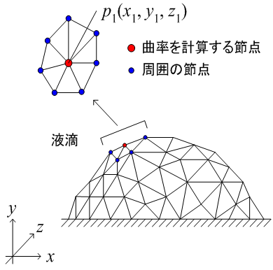

広告
・曲率計算
表面張力を計算するには、曲率を計算する必要があります。 ここでは、界面上の節点と近似関数を用いて曲率を計算してみます。
曲率を計算する節点を下図で与える。4面体 1次要素の界面です。

界面の近似間数を次式で与えます。
\[(x-x_c)^2+(y-y_c)^2+(z-z_c)^2-r^2=0\]
界面上の節点p1(x1, y1, z1)を通るので
\[\begin{aligned}r^2&=(x_1-x_c)^2+(y_1-y_c)^2+(z_1-z_c)^2\\[6pt]&=r_0^2\end{aligned}\]
最小二乗法より誤差を計算すると
\[\begin{aligned}\chi(x_c,y_c,z_c)&=\sum_{i=1}^{n}\left\{(x_i-x_c)^2+(y_i-y_c)^2+(z_i-z_c)^2-r_0^2\right\}^2\\[6pt]&=\sum_{i=1}^{n}\left\{(x-x_c)^2+(y-y_c)^2+(z-z_c)^2-(x_1-x_c)^2-(y_1-y_c)^2-(z_1-z_c)^2\right\}^2\\[6pt]&=\sum_{i=1}^{n}\left\{2(x_1-x)x_c+2(y_1-y)y_c+2(z_1-z)z_c+x^2-x_1^2+y^2-y_1^2+z^2-z_1^2\right\}^2\\[6pt]&=0\end{aligned}\]
xcで微分して
\[\begin{aligned}\left.\frac{\partial\chi}{\partial x_c}\right|_{y_c,z_c}&=\sum_{i=1}^{n}4(x_1-x_i)\left\{2(x_1-x_i)x_c+2(y_1-y_i)y_c+2(z_1-z_i)z_c+x_i^2-x_1^2+y_i^2-y_1^2+z_i^2-z_1^2\right\}\\[6pt]&=0\end{aligned}\]
ycで微分して
\[\begin{aligned}\left.\frac{\partial\chi}{\partial y_c}\right|_{z_c,x_c}&=\sum_{i=1}^{n}4(y_1-y_i)\left\{2(x_1-x_i)x_c+2(y_1-y_i)y_c+2(z_1-z_i)z_c+x_i^2-x_1^2+y_i^2-y_1^2+z_i^2-z_1^2\right\}\\[6pt]&=0\end{aligned}\]
zcで微分して
\[\begin{aligned}\left.\frac{\partial\chi}{\partial z_c}\right|_{x_c,y_c}&=\sum_{i=1}^{n}4(z_1-z_i)\left\{2(x_1-x_i)x_c+2(y_1-y_i)y_c+2(z_1-z_i)z_c+x_i^2-x_1^2+y_i^2-y_1^2+z_i^2-z_1^2\right\}\\[6pt]&=0\end{aligned}\]
まとめると
\[\left\{\begin{aligned}\sum_{i=1}^{n}4(x_1-x_i)\left\{2(x_1-x_i)x_c+2(y_1-y_i)y_c+2(z_1-z_i)z_c+x_i^2-x_1^2+y_i^2-y_1^2+z_i^2-z_1^2\right\}&=0\\[6pt]\sum_{i=1}^{n}4(y_1-y_i)\left\{2(x_1-x_i)x_c+2(y_1-y_i)y_c+2(z_1-z_i)z_c+x_i^2-x_1^2+y_i^2-y_1^2+z_i^2-z_1^2\right\}&=0\\[6pt]\sum_{i=1}^{n}4(z_1-z_i)\left\{2(x_1-x_i)x_c+2(y_1-y_i)y_c+2(z_1-z_i)z_c+x_i^2-x_1^2+y_i^2-y_1^2+z_i^2-z_1^2\right\}&=0\end{aligned}\right.\]
変数ごとにまとめて
\[\left\{\begin{aligned}x_c\sum_{i=1}^{n}(x_1-x_i)(x_1-x_i)+y_c\sum_{i=1}^{n}(x_1-x_i)(y_1-y_i)+z_c\sum_{i=1}^{n}(x_1-x_i)(z_1-z_i)&=-\frac{1}{2}\sum_{i=1}^{n}(x_1-x_i)\left\{x_i^2-x_1^2+y_i^2-y_1^2+z_i^2-z_1^2\right\}\\[6pt]x_c\sum_{i=1}^{n}(y_1-y_i)(x_1-x_i)+y_c\sum_{i=1}^{n}(y_1-y_i)(y_1-y_i)+z_c\sum_{i=1}^{n}(y_1-y_i)(z_1-z_i)&=-\frac{1}{2}\sum_{i=1}^{n}(y_1-y_i)\left\{x_i^2-x_1^2+y_i^2-y_1^2+z_i^2-z_1^2\right\}\\[6pt]x_c\sum_{i=1}^{n}(z_1-z_i)(x_1-x_i)+y_c\sum_{i=1}^{n}(z_1-z_i)(y_1-y_i)+z_c\sum_{i=1}^{n}(z_1-z_i)(z_1-z_i)&=-\frac{1}{2}\sum_{i=1}^{n}(z_1-z_i)\left\{x_i^2-x_1^2+y_i^2-y_1^2+z_i^2-z_1^2\right\}\end{aligned}\right.\]
これを解くと変数xc, yc, zc が求まるので曲率が計算できます。
また、法線ベクトルは次式となります。
\[\begin{aligned}\vec{n}&=\vec{\delta}_x n_x+\vec{\delta}_y n_y+\vec{\delta}_z n_z\\[6pt]n_x&=\frac{x_1-x_c}{r_0}\\[6pt]n_y&=\frac{y_1-y_c}{r_0}\\[6pt]n_z&=\frac{z_1-z_c}{r_0}\\[6pt]r_0&=\sqrt{(x_1-x_c)^2+(y_1-y_c)^2+(z_1-z_c)^2}\end{aligned}\]
| prev | | | up | | | next |